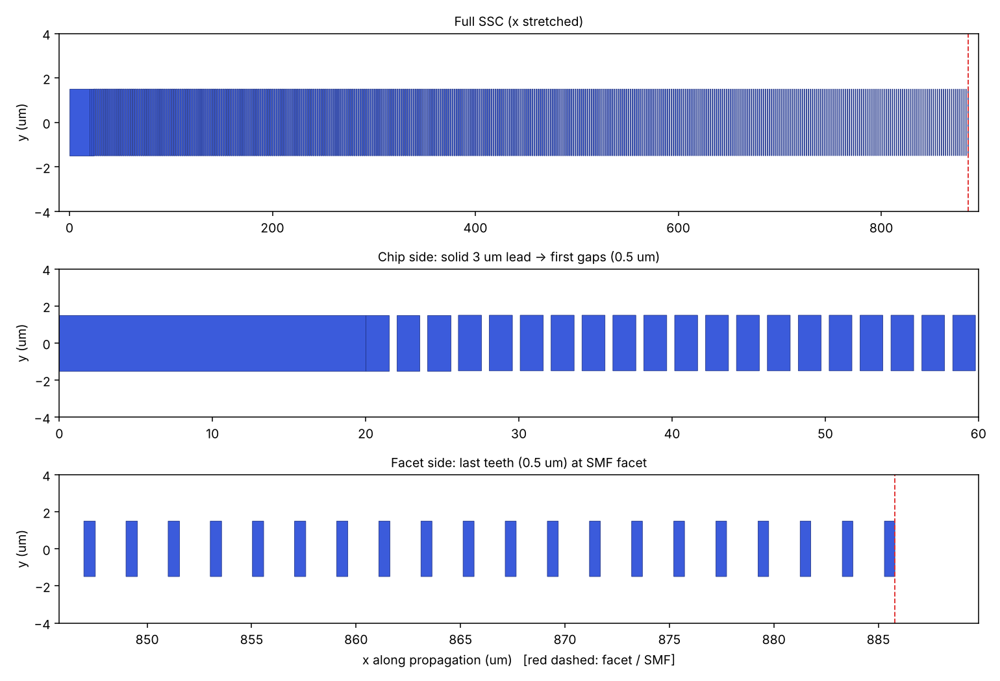

2.5% Δ GeO₂-silica 3×3 µm 코어 ↔ SMF-28, 1550 nm. 최소 선폭·갭 0.5 µm 제약 하에서 실제 tooth/gap 형상을 그대로 넣은 3D BPM을 목적함수로 GA 최적화한 segmented SSC — 결합손실 0.294 dB (bare 3.32 dB).
| 항목 | 값 |
|---|---|
| SSC ↔ SMF-28 결합손실 (true-segment 3D BPM, dx 0.10 µm) | 0.294 dB (η = 93.5 %) |
| 2D FDTD 보정 반영 추정치 | ≈ 0.30 – 0.32 dB |
| bare 3×3 µm 도파로 ↔ SMF-28 (SSC 없음) | 3.32 dB |
| 칩 모드 / facet 모드 크기 (D4σ) | 3.9 × 3.9 µm → 11.9 × 11.6 µm (거의 원형) |
| 구조 | 폭 3 µm 고정, pitch 2.017 µm × 430 period, duty 0.752 → 0.248 (선형), 길이 886 µm |
| DRC (GDS 실측) | min tooth 0.501 µm · min gap 0.501 µm · min width 2.99 µm — PASS ≥ 0.5 µm |
| 1500–1600 nm | 0.29 – 0.36 dB |
| 파라미터 | 값 | 비고 |
|---|---|---|
| 파장 | 1550 nm | 1500–1600 nm sweep 포함 |
| 클래드 nclad | 1.44402 | fused silica, Malitson Sellmeier |
| 코어 ncore | 1.48154 | Δ = (n₁² − n₂²)/(2n₁²) = 2.5 % |
| 코어 | 3.0 × 3.0 µm | 두께는 증착으로 고정 → SSC는 마스크(평면) 패턴만으로 구현 |
| SMF-28 MFD | 10.4 µm | Gaussian, w₀ = 5.2 µm |
| 최소 선폭 / 갭 | 0.5 µm | tooth 길이, gap 길이, 코어 폭 모두 적용 |
| 단계 | 목적함수 | 결과 |
|---|---|---|
| 1. 탐색 | 실효매질(duty 평균) 3D BPM, dx 0.35 µm | 0.166 dB — pitch를 보지 못하므로 비현실적 하한 |
| 2. 설계 GA | 실제 tooth/gap 3D BPM, dx 0.15 µm, 6 유전자 (L, P, dfacet, Wfacet, pd, pw), DRC·Bragg 제약, pop 16 × 12 세대 | 0.284 dB, pitch ≈ 2.0 µm로 수렴 |
| 3. 국소 정밀화 | 동일, 좁은 범위, pop 12 × 9 세대 | 0.275 dB (dx 0.15) → 0.294 dB (dx 0.10 검증) |
GA는 양 끝에서 DRC 경계에 붙었습니다: 시작 갭 = 0.5 µm (duty 0.752), facet tooth = 0.5 µm (duty 0.248). 폭은 3 µm 그대로 두는 순수 duty 테이퍼가 최적이었고, 이 조합에서 facet 모드가 11.9 × 11.6 µm로 거의 원형이 되어 타원 문제가 해소됩니다. 남는 손실은 약하게 도파되는 facet 모드의 비-Gaussian 꼬리(facet 모드 자체의 SMF 정합 0.23 dB)와 세그먼트 방사(≈ 0.04–0.06 dB)입니다.
| 방법 | 손실 | 의미 |
|---|---|---|
| true-segment 3D BPM (dx 0.10) | 0.294 dB | 설계값 |
| 실효매질 3D BPM | 0.256 dB | 세그먼트 방사 제외 → 방사분 ≈ 0.04 dB |
| local-mode EME (80 slice overlap 곱 × facet) | 0.316 dB | junction 0.051 + taper 0.084 + facet 0.232 dB (보수적 상한) |
| 2D FDTD vs paraxial BPM (60 µm 세그먼트 구간) | BPM이 −0.06 ~ +0.02 dB | paraxial BPM이 세그먼트 손실을 약간 과소평가 → 설계값에 +0.01–0.03 dB 보정 |

| 변수 | 조건 | 손실 (dB) |
|---|---|---|
| CD bias (tooth 길이·폭 동시) | −0.10 / −0.05 µm | 0.533 / 0.416 |
| +0.05 / +0.10 µm | 0.347 / 0.383 | |
| facet 절단 위치 | −0.25 µm (마지막 tooth 깎임) ~ +1.5 µm (갭 안) | 0.297 ~ 0.302 |
| SMF 정렬오차 (x 또는 y) | 0.5 / 1.0 / 2.0 µm | 0.335 / 0.458 / 0.948 |
| 파장 | 1500 / 1525 / 1575 / 1600 nm | 0.317 / 0.296 / 0.323 / 0.357 |
CD가 줄어드는 쪽(−bias)이 더 민감합니다 — facet 모드가 cutoff 가까이 밀려 neff 여유가 0.0007에 불과하기 때문입니다. 공정 bias를 알고 있다면 마스크에 그만큼 보정 bias를 주는 것이 좋습니다. facet 절단(연마) 위치에는 둔감해서 dicing/polishing 공차 부담은 작습니다.
갭이 없는 단순 폭 테이퍼(3 µm → 0.55 µm tip, 2 mm, √ 형상)도 같은 BPM으로 0.300 dB가 나와 segmented 설계와 거의 같습니다. tip 0.50 / 0.60 / 0.65 µm에서는 0.33 / 0.32 / 0.40 dB. 0.5 µm 갭 패턴이 부담스러운 공정이라면 고려할 만해서 GDS에 SSC_ALT_INV_TAPER 셀로 함께 넣었습니다 (길이가 2배 이상이고 tip 폭이 DRC 한계에 가깝다는 점은 감안).

| Cell | 내용 |
|---|---|
SSC_2p5_3um_1550 | 단일 SSC: 3 µm solid lead 20 µm → 430 period segmented taper → facet (+x) |
SSC_B2B_TEST | SSC – 3 mm 직선 3 µm 도파로 – SSC (back-to-back, 총 4.77 mm) — 삽입손실/cut-back 측정용 |
REF_STRAIGHT | SSC 없는 같은 길이 3 µm 직선 도파로 (비교 기준) |
SSC_ALT_INV_TAPER | 대안 solid inverse taper (tip 0.55 µm, 2 mm) |
TOP | 위 4개를 250 µm 간격으로 배치 |
레이어: (1,0) WG core · (2,0) FACET 절단/연마 위치 마커 · (10,0) TEXT (비공정). 좌표 1 nm grid snap. 실제 공정 PDK 레이어로 remap 필요.
pip install numpy scipy numba gdstk matplotlib python scan_facet.py # facet landscape (~1.5 min) python ssc_ga.py 1 # stage 1: effective-medium GA (~2 min) python ssc_ga.py 2 # stage 2: true-segment GA (~25 min, 2 cores) python ga_refine.py # stage 3: local refinement (~20 min) python verify_final.py # dx = 0.10 um verification (~5 min) python compare_solid.py # solid inverse-taper alternative python fdtd2d_check.py # 2D FDTD calibration (~6 min) python make_gds.py # -> ssc_2p5pct_3um_1550.gds, ssc_layout.png python make_figures.py # -> ssc_result_summary.png, ssc_compare.png